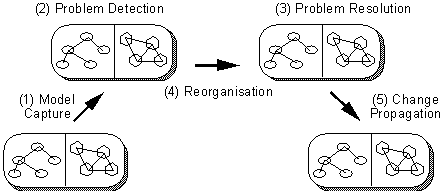
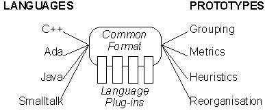
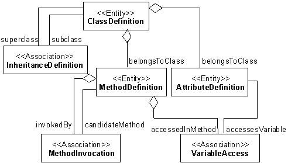
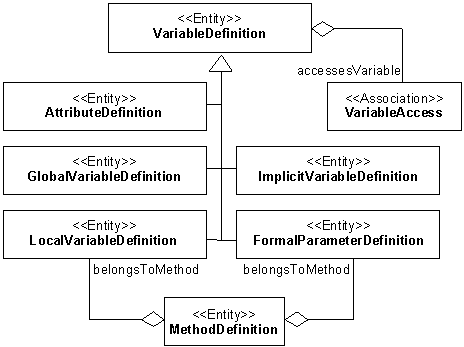

All comments are welcome: famoos@iam.unibe.ch.
The FAMOOS project (http://www.iam.unibe.ch/~famoos/) aims to develop a re-engineering method for transforming object-oriented legacy code into frameworks. The re-engineering method itself is defined around a life cycle model (see also Figure 1).

Figure 1: FAMOOS re-engineering life cycle
To realise that life cycle, three research areas which are likely to furnish solutions have been selected for further investigation
Currently, the FAMOOS partners are building a number of tool prototypes for conducting various experiments within those three research areas. However, the source code available for case studies is written in different implementation languages (C++, Ada and to a lesser extent Java and Smalltalk). To avoid equipping all the tool prototypes with parsing technology for all of the implementation languages, it is necessary to agree on a common information exchange format with language specific extensions (see Figure 2). This document is a specification for such a format.

Figure 2: Conception of the Common Exchange Format
Based on our experiences with the tool prototypes built so far, plus given a survey of the literature on re-engineering repositories and code base management systems we specified the following requirement list. The list is split up in two, one part defining requirements concerning the data model, the other part specifying issues concerning the representation.
We have chosen CDIF as the basis for the FAMOOS exchange model [EVALCDIF]. CDIF is an industrial standard for transferring models created with different tools. More information concerning the CDIF standard can be found at http://www.cdif.org/. Among others, the CDIF standard provides an encoding that allows the transfer models via flat ASCII streams.
The core model specifies the entities and relations that can and should be extracted immediately from source code. We explicitly opted for longer names here ("ClassDefinition" instead of "Class", "MethodDefinition" instead of "Method") because other sources (CASE tools, architecture extractors, etc.) may also provide a "Method" and a "Class", which is not necessarily the same concept as a method or a class extracted from source code. The long naming scheme should allow us to deal with other information sources.

The core model contains entities that not all parsers may provide (for instance, the MethodInvocation and VariableAccess associations are not available from the SNiFF-API). Also, some tools do not always need all of this information (i.e. many metrics can already be gathered from ClassDefinition, MethodDefinition alone). To allow "incomplete" models, we introduced the level of reification.
Basically, the level of reification is an integer, telling how much of the core model is actually available. In principle, the bigger the number, the more information is available. The following table gives an overview of the levels of reification.
|
Level 1 |
Level 1 is the minimum model that parsers should be able to provide and corresponds with what is usually understood as the interface of a class. |
|
Level 2 |
|
|
Level 3 |
|
|
Level 4 |
Level 3 + |
|
Level 5 |
Level 4 + the |
|
Level 6 |
Level 5 + all information concerning arguments, local variables, global variables, implicit variables. |
Table 1: Levels of Reification
|
<<metaclass>> |
||
|
kind (): Name |
kind (): Name name (): Name |
Figure 4: The Meta-Meta Model (Entity, Association)
Entity and Association are explicit parts of the meta-meta model made available to handle the extensibility requirement (see "2) Requirements Specification" - p.*). For specifying language plug-ins, it is allowed to define language specific entities and associations plus it is allowed to add language specific properties to existing entities or relations. Tool prototypes are more restricted in extensions to the model: they can define tool specific properties for existing entities or associations, but can not extend the repertoire of entities and associations themselves.
Users who do not need to extend the model may safely assume that the meta-classes Association and Entity behave like an abstract superclass for the classes in the core model. That is, if a class in the core model is said to be an Association or an Entity (via a stereotype on the class), it will inherit the protocol from those classes.
- kind: Name; mandatory
- sourceAnchor: Qualifier; optional, default = 'null'
(file <filespec> start <start_index> stop <stop_index>).filespec> is a string holding the name of the source-file in an operating system dependent format (preferably a filename relative to some project directory). Where <start_index> and <stop_index> are indices starting at 1 and holding the beginning / ending character position in the source file.startline, startcol, stopline, stopcol). Or the negative offset counting from the end of the file instead of from the beginning (negstart, negstop).
- commentLines: 0..N String
- properties: 0..N Object
To enable a global referencing scheme based on names, the key classes in the model should respect the minimal interface of Entity.
- name: String; mandatory
- uniqueName: String; mandatory
Besides the usual primitive data types (String, Integer, Boolean ) there are a number of extra data types that are considered "basic". Note that all data types have the possibility of representing a null-value.
|
Name |
Qualifier |
Index |
||
|
name: String |
qualifier: String |
index: Integer |
||
|
isNull (): Boolean |
isNull (): Boolean |
isNull (): Boolean |
Figure 5: Basic Data Types (Name, Qualifier and Index)
- Name
QualifierName is a string that bears semantics inside the model, while a Qualifier is a string that gets its semantics from outside the model. A String does not bear any semantics. For instance, a uniqueName may be used to refer to another object, hence bears semantics inside the model. However, a sourceAnchor will store some information that must be interpreted by applications outside the model, hence is a qualifier. Finally, a comment line is a string, since it does not bear any semantics understandable by a computer.
- Index
|
<<Entity>> |
|
isAbstract (): BooleanOrNull |
A ClassDefinition represents the definition of a class in source code. What exactly constitutes such a definition is a language dependent issue. Besides the attributes inherited from the meta-class Entity, it has the following attributes:
- isAbstract: Boolean; optional, default = 'null'
- scopeQualifier: Qualifier; optional, default = 'null'
uniqueNameif isNull (scopeQualifier(class)) then
uniqueName (class) = name (class)
else
uniqueName (class) = scopeQualifier (class)
+ "::" + name (class)
|
<<Entity>> |
|
belongsToClass (): Name |
A MethodDefinition represents the definition in source code of an aspect of the behaviour of a class. What exactly constitutes such a definition is a language dependent issue. Besides the attributes inherited from the meta-class Entity, it has the following attributes:
- belongsToClass: Name; mandatory
- accessControlQualifier: Qualifier; optional, default = 'null'
- hasClassScope: Boolean; optional, default = 'false'
- signature (): Qualifier; mandatory
- isAbstract: Boolean; optional, default = 'null'
- isConstructor: Boolean; optional, default = 'null'
- isAccessor: Boolean; optional, default = 'null'
- declaredReturnType: Qualifier; optional, default = 'null'
uniqueNameuniqueName (method) = belongsToClass (method) +
"::" + signature (method)
|
<<Entity>> |
|
belongsToClass (): Name declaredType (): Qualifier |
An AttributeDefinition represents the definition in source code of an aspect of the state of a class. What exactly constitutes such a definition is a language dependent issue. Besides the attributes inherited from the meta-class Entity, it has the following attributes:
- belongsToClass: Name; mandatory
- accessControlQualifier: Qualifier; optional, default = 'null'
- hasClassScope: Boolean; optional, default = 'false'
- declaredType: Qualifier; optional, default = 'null'
- interfaceSignatures: 0 .. N Qualifier
uniqueNameuniqueName (attribute) = belongsToClass (attribute) +
"." + name (attribute)
|
<<Association>> |
|
subclass (): Name |
Figure 9: InheritanceDefinition
An InheritanceDefinition represents the definition in source code of an inheritance association between two classes. One class then plays the role of the superclass, the other plays the role of the subclass. What exactly constitutes such a definition is a language dependent issue. Besides the attributes inherited from the meta-class Association, it has the following attributes:
- subclass: Name; mandatory
- superclass: Name; mandatory
- accessControlQualifier: Qualifier; optional, default = 'null'
- index: Index; optional, default = 'null'
|
<<Association>> |
|
accessesVariable (): Name |
A VariableAccess represents the definition in source code of a method accessing a variable. Depending on the level of reification (see Table 1, p. *), that variable may be an attribute, a local variable, an argument, a global variable
. What exactly constitutes such a definition is a language dependent issue. Besides the attributes inherited from the meta-class Association, it has the following attributes:
- accessesVariable: Name; mandatory
- accessedInMethod: Name; mandatory
- isAccessLValue: Boolean; optional, default = 'null'
- isArgument: Boolean; mandatory, default = 'false'
|
<<Association>> |
|
invokedByMethod (): Name candidateMethodsAt (pos Integer): Name |
A MethodInvocation represents the definition in source code of a method invoking another method. What exactly constitutes such a definition is a language dependent issue. However, it is important to note that due to late binding polymorphism, a method invocation is quite different from a procedure call. Especially, it means that at parse time there exist a one-to-many relationship between the method invocation and the actual method invoked. This explains the presence of the candidateMethods aggregation.
Besides the attributes inherited from the meta-class Association, it has the following attributes:
- invokedByMethod: Name; mandatory
- invokeMethod: Name; mandatory
- candidateMethods: 0 .. N Name
- arguments: 0 .. N ArgumentDescriptor
|
<<Association>> |
||||
|
position (): Index |
||||
|
<<Association>> |
<<Association>> |
|||
|
variableAccess (): VariableAccess |
||||
Figure 12: ArgumentDescriptor, ComplexExpression & SimpleVariableAccess
An ArgumentDescriptor represents the passing of an argument when invoking a method. What exactly constitutes such a definition is a language dependent issue. The model distinguishes between two kind of arguments, a complex expression or a simple variable access. The former means that some expression is passed, in that case the contents of the expression is not further specified. The latter means that some variable is passed, in which case a variable access is maintained.
Besides the attributes inherited from the meta-class Association, it has the following attributes:
- position: Index; mandatory
- isReceiver: Boolean; mandatory
variableAccess: VariableAccess; mandatory
Figure 13: VariableDefinition Hierarchy
All possible variable definitions are subclasses of the class VariableDefinition. VariableDefinition itself participates in the VariableAccess association.
|
<<Entity>> |
|
declaredType (): Qualifier |
A VariableDefinition represents the definition in source code of a variable, i.e. a named memory location. Subclasses of this class represent different mechanisms for defining such a variable. Besides the attributes inherited from the meta-class Entity, it has the following attributes:
- declaredType: Qualifier; optional, default = 'null'
- interfaceSignatures: 0 .. N Qualifier
|
<<Entity>> |
|
scopeQualifier (): Qualifier |
Figure 15: GlobalVariableDefinition
A GlobalVariableDefinition represents the definition in source code of a variable with a lifetime equal to the lifetime of a running system, and which is globally accessible. What exactly constitutes such a definition is a language dependent issue. Besides the attributes inherited from the meta-class Entity and the class Variable, it has the following attributes:
- scopeQualifier: Qualifier; optional, default = 'null'
uniqueNameif isNull (scopeQualifier(globalVariable)) then
uniqueName (globalVariable) = name (globalVariable)
else
uniqueName (globalVariable) = scopeQualifier (globalVariable)
+ "." + name (globalVariable)
|
<<Entity>> |
|
scopeQualifier (): Qualifier |
Figure 16: ImplicitVariableDefinition
An ImplicitVariableDefinition represents the definition in source code of context dependent reference to a memory location (i.e., 'this' in C++ and Java, 'self' and 'super' in Smalltalk). What exactly constitutes such a definition is a language dependent issue. Besides the attributes inherited from the meta-class Entity and the class Variable, it has the following attributes:
- scopeQualifier: Qualifier; optional, default = 'null'
uniqueNameif isNull (scopeQualifier(implicitVariable)) then
uniqueName (implicitVariable) = name (implicitVariable)
else
uniqueName (implicitVariable) =
scopeQualifier (implicitVariable)
+ "." + name (implicitVariable)
|
<<Entity>> |
|
belongsToMethod (): Name |
Figure 17: LocalVariableDefinition
A LocalVariableDefinition represents the definition in source code of a variable defined locally to a method. What exactly constitutes such a definition is a language dependent issue. Besides the attributes inherited from the meta-class Entity and the class Variable, it has the following attributes:
- belongsToMethod: Name; mandatory
uniqueNameuniqueName (localVar) = belongsToMethod (localVar) +
"." + name (localVar)
|
<<Entity>> |
|
belongsToMethod (): Name |
Figure 18: FormalParameterDefinition
A FormalParameterDefinition represents the definition in source code of a formal parameter. What exactly constitutes such a definition is a language dependent issue. Besides the attributes inherited from the meta-class Entity and the class Variable, it has the following attributes:
- belongsToMethod: Name
- position: Index; mandatory
- isReciever: Boolean; mandatory; default = 'false'
uniqueNameuniqueName (formalPar) = belongsToMethod (formalPar) +
"." + name (formalPar)
The unified Modelling Language (UML) [BoochEtAl'96] is rapidly becoming the standard modelling language for object-oriented software, even in industry. So, UML is a viable candidate for serving as the data model behind our exchange format. Nevertheless, UML is geared towards an analysis / design language and there exists no accurate and straightforward mapping from source-code to UML. For instance, inheritance like applied in an implementation does not necessarily correspond to generalisation like specified in UML (e.g., in an implementation a Rectangle might be a subclass of Square while a correct generalisation is the other way around). Likewise, attribute definitions do not always correspond with aggregation (e.g., is a Rectangle an aggregation of two instances of Point or is it an aggregation of four integers). Thus choosing UML would violate the requirement that the data model should be readily distillable from source code (see p.*) and that's the first motivation to rule out UML.
Moreover, extracting an accurate UML model from source code is considered quite important during the model capture phase of the re-engineering life cycle (see Figure 1). The FAMOOS project will definitely investigate that topic in further depth, and we do not want to hamper such investigations by choosing a straightforward but inaccurate mapping. That is the second motivation to rule out UML.
However, we relied heavily on UML in the terminology and naming conventions applied in our model to become independent of the implementation language. For example, we talk about attributes instead of members (C++) or instance variable (Smalltalk) and we talk about classes instead of types (Ada).
Corba is receiving widespread attention as interoperability standard between different object-oriented implementation languages. The IDL (interface description language) is used to specify the external interface of a software component and there are tools that extract IDL from source code. As such, Corba/IDL is a viable candidate to serve as our exchange format.
However, Corba/IDL only describes the interface of a software component, not the internal dependencies like method invocations and variable accesses. Those dependencies are necessary in the problem detection and reorganisation phases of the re-engineering life cycle (Figure 1). Thus, choosing Corba/IDL would violate the requirement of being a sufficient basis for re-engineering operations (see p.*).
Because of late binding polymorphism, not all method invocations can be resolved at compile time. Also, a model based on source code is not ideal for identifying sequences of interactions between objects. Thus, basing the model solely on static information eliminates some interesting facts about a software system and one might consider including run-time information as well.
For the moment we consider the issue too premature to include in an information exchange standard. The technology is available (i.e., Look for C++, method wrappers for Smalltalk) but is certainly not part of the standard tool repertoire. And extracting run-time information generates such a wealth of data that we cannot asses what is important enough to maintain.
Some OO languages are extensions of older procedural languages, and as such allow a hybrid programming style. Part of the object-oriented re-engineering problem is precisely that programmers did not use object-oriented constructs where it would have been advantageous. For problem detection, it might be worthwhile to include procedural constructs in the model.
For the moment we decided to ignore the issue. We have some ideas on expressing procedural programming constructs as degenerated object-oriented constructs (e.g., define a procedure as a method defined on a dummy class) but no concrete proposal in that direction.
[DETECTM] FAMOOS Achievement Report DETECTM-A.2.3.2. " Specification of Techniques and Strategies for Problem Detection". Benedikt Schulz, Forschungszentrum Informatik.
[DOCUM] FAMOOS Achievement Report DOCUM-A.2.3.1. " Documentation and Model Capture Method(Grouping)". Oliver Ciupke, Forschungszentrum Informatik.
[EVALCDIF] FAMOOS Achievement Report EVALCDIF "Evaluation of the CDIF Transfer-Format". Thomas Kohler, Daimler-Benz AG.
[REORGOP] FAMOOS Achievement Report REORGOP-A.2.3.3./A.2.3.4. " Specification of Complex Re-engineering Operations and Target Structures ". Joachim Weisbrod, Forschungszentrum Informatik.
[BoochEtAl'96] Booch, G., Jacobson, I. and Rumbaugh, J, The Unified Modelling Language for Object-Oriented Development. See http://www.rational.com/.
Achievement A2.4.1
Definition of a Common Exchange Model
|
Project Id: |
Esprit IV #21975 "FAMOOS" |
|
Deliverable Id: |
D 2.2 FINALFHB Final FAMOOS Methodology Handbook |
|
Date for delivery: |
31.03.98 |
|
Planned date for delivery: |
31.03.98 |
|
WP(s) contributing to: |
2 |
|
Author(s): |
S. Demeyer, S. Ducasse, T. Richner, M. Rieger, P. Steyaert, S. Tichelaar |
This document defines the exchange model for usage by tool prototypes within the FAMOOS re-engineering project. The model is based upon the CDIF standard so that it can be transferred via flat ASCII streams.
Object-oriented, reengineering, reverse engineering, code repository, FAMOOS.
|
Ver |
Date |
Editor(s) |
Status & Notes |
|
0.4 |
17.11.97 |
S. Demeyer; P. Steyaert |
First draft version. Released to all the participants of the Ulm-workshop (21.11.97). |
|
0.5 |
24.11.97 |
S. Demeyer |
Quick tour of revised model; incorporates feedback generated during workshops at FZI (20.11.97) and Daimler-Benz (21.11.97). |
|
0.6 |
09.01.98 |
S. Demeyer |
Expanded quick tour into a full specification. Changed original document template for convenient generation of HTML. Document is now ready for reviewing and defining language plug-ins. |
|
1.0 |
30.03.98 |
S. Demeyer |
Final release:
|
Definition of a Common Exchange Model
*Abstract
*1) Introduction
*2) Requirements Specification
*3) CDIF Transfer Format
*4) The Data Model
*4.1. The Core Model
*4.2. Level of Reification
*4.3. Entity / Association (the Meta-Meta Model)
*4.4. Basic Data Types
*4.5. Core Entity: ClassDefinition
*4.6. Core Entity: MethodDefinition
*4.7. Core Entity: AttributeDefinition
*4.8. Core Association: InheritanceDefinition
*4.9. Core Association: VariableAccess
*4.10. Core Association: MethodInvocation
*4.11. ArgumentDescriptor
*4.12. VariableDefinition
*4.13. VariableDefinition
*4.14. GlobalVariableDefinition
*4.15. ImplicitVariableDefinition
*4.16. LocalVariableDefinition
*4.17. FormalParameterDefinition
*5) Open Questions
*5.1. Why not UML?
*5.2. Why not CORBA/IDL?
*5.3. What about Dynamic Information?
*5.4. How do you handle hybrid languages (C++, Ada...)?
*6) References
*6.1. FAMOOS Internal References
*6.2. External References
*Cover Pages
*1. IDENTIFICATION
*2. ABSTRACT
*3. KEYWORDS
*4. VERSION HISTORY
*5. TABLE OF CONTENTS
*6. LIST OF FIGURES
*7. LIST OF TABLES
*
Figure 1: FAMOOS re-engineering life cycle
*Figure 2: Conception of the Common Exchange Format
*Figure 3: The Core Model
*Figure 4: The Meta-Meta Model (Entity, Association)
*Figure 5: Basic Data Types (Name, Qualifier and Index)
*Figure 6: ClassDefinition
*Figure 7: MethodDefinition
*Figure 8: AttributeDefinition
*Figure 9: InheritanceDefinition
*Figure 10: VariableAccess
*Figure 11: MethodInvocation
*Figure 12: ArgumentDescriptor, ComplexExpression & SimpleVariableAccess
*Figure 13: VariableDefinition Hierarchy
*Figure 14: VariableDefinition
*Figure 15: GlobalVariableDefinition
*Figure 16: ImplicitVariableDefinition
*Figure 17: LocalVariableDefinition
*Figure 18: FormalParameterDefinition
*
Table 1: Levels of Reification
*